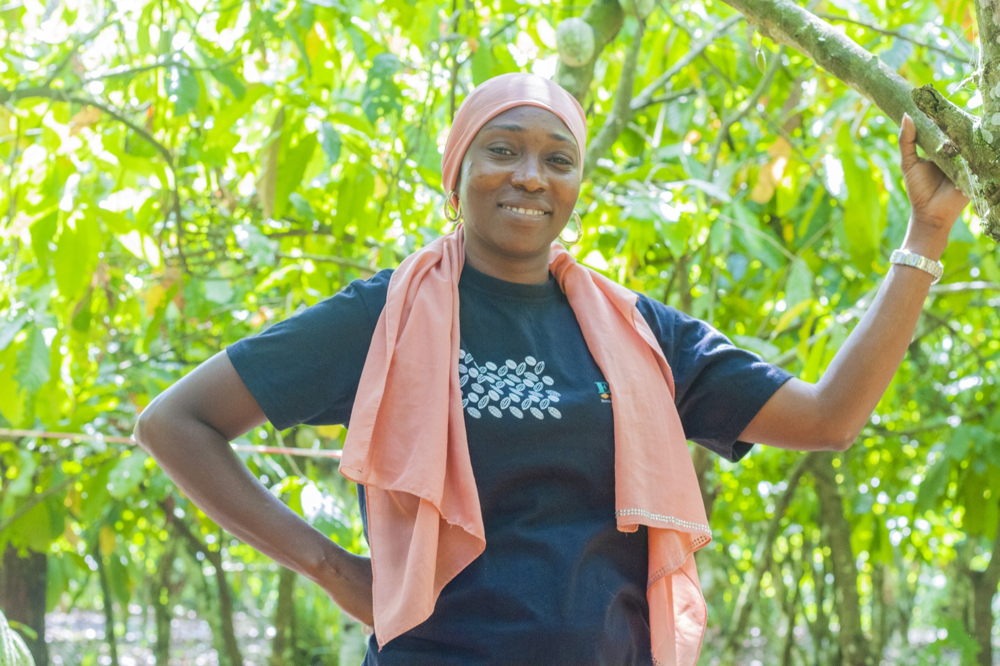
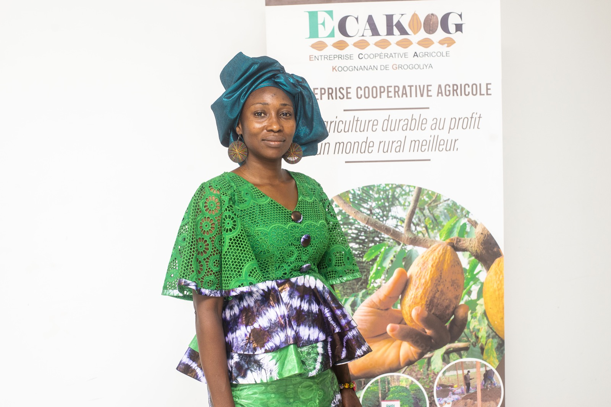

Inclusion financière pour moderniser les transactions et sécuriser les revenus des producteurs
La chaîne de valeur du cacao est bien structurée. Cependant, nos producteurs membres n’ont pas accès aux services des banques, des établissements de microfinance et des autres institutions financières formelles. Le défi est donc d’offrir à nos membres un accès aux services financiers qui soient à la fois abordables et adaptés à nos besoins en tant qu’agriculteurs.
Le développement du système financier et l’amélioration de l’inclusion financière sont des priorités pour notre entreprise coopérative. ECAKOOG, en collaboration avec les institutions de microfinance partenaires, a sensibilisé les producteurs à l’importance d’accéder aux services financiers formels. C’est une opération importante qui a permis d’enrôler plus de 1500 producteurs avec des comptes actifs.
Avec un fonctionnement simple, quand les producteurs sont rémunérés après le pesage de leurs fèves, ils peuvent décider du montant qu’ils souhaitent recevoir sur leur compte bancaire, et du montant qu’ils souhaitent recevoir en espèces.
L’objectif avec le programme Koognanan cacao est de bancariser 100% de nos producteurs d’ici 2027, de les former à une bonne éducation financière et de faire de chacun de nos membres des entrepreneurs agricoles.
Nos Actions
- Comptes bancaires pour >1500 producteurs
- Paiements mixtes (Compte/Espèces)
- Éducation financière
- Sécurisation des revenus
- Objectif 100% bancarisé en 2027
Témoignage
"La bancarisation transforme la vie de nos producteurs. Elle leur donne accès aux services financiers formels, qui leur offrent plus de sécurité et de possibilités. Avec leur compte, les producteurs font des choix plus judicieux. Ils ne dépensent pas tout leur argent sur un coup de tête, mais ils le gèrent avec sagesse."
